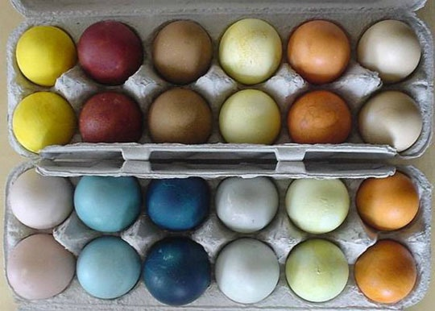

April 1, 2018
An Easter Primer on Dyes

Did you know the first synthetic dye, “Mauvine”, was produced in 1856? This invention opened the door to a flood of cheap synthetic dyes that are easy to make, colorfast, and come in an unlimited variety of colors. Unfortunately these synthetic dyes sometimes contain mercury, lead, chromium, and a host of other toxic substances and carcinogens that are harmful to humans and the environment. Wastewater from the textile industry is the most polluting of all sectors with up to 200,000 tons of dyes lost into effluent each year.
Most dyes escape conventional wastewater treatment processes and remain in the environment for a long time due to high stability to temperature, and sunlight. Dyes also absorb light, impede photosyntheses, reducing dissolved oxygen and reeking havoc in aquatic environments.
Many countries have set standards for effluent composition, but amazingly some, like India, Pakistan, and Malaysia have only ‘recommended’ limits that are not mandatory. Though there new technologies such as waterless and near-waterless dying techniques—as long as we feed the demand for inexpensive, ‘disposable’ textiles, those dyes are going to keep running.
So this Easter, how about taking a step towards a ‘greener’ aesthetic and giving some natural dyes a try:
For pink- and red-colored eggs, use cranberry juice, beets, or raspberries.
For yellow eggs, use saffron or turmeric.
For purple eggs, use red wine.
For blue eggs, use red cabbage leaves or blueberries.
For brown eggs, use grape juice, rosehip tea, or coffee.
For orange eggs, use yellow onion skins.